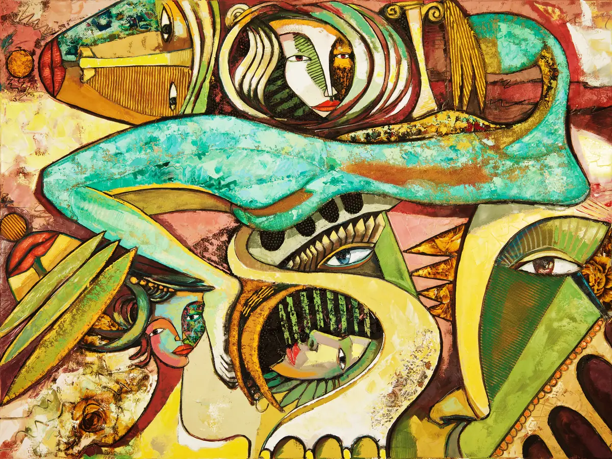

Serene and Enchanting
Fredfullt og fortryllende- År
- 2020
- Teknikk
- Blandingsteknikk på lerret
- Mål (høyde × bredde)
- 120 × 150 cm
Serene and Enchanting, 2020: et verk i blandingsteknikk på lerret av den kubansk-norske maleren og billedhuggeren Ramón Eduardo Haití Filiu.
Spør om dette verket